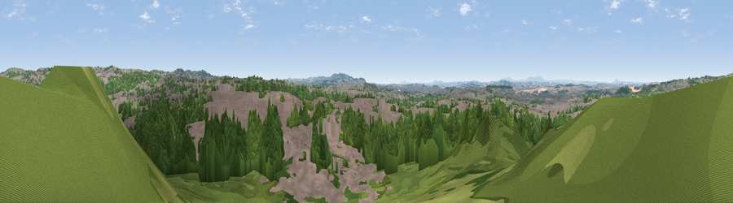

Viewpoint near Bromley
#22179 in England · top 30% of its area beats it · near BromleyWhere it is
The exact computed spot (SO 91625 89575). Click the marker for map links.
The view, rendered

A 360° render of this exact spot computed from the terrain model, tree cover and land cover — summer colours, afternoon light, calibrated against photographs of famous viewpoints. Real trees, hedges and buildings will differ in detail.
The panorama
Grey silhouette: terrain skyline in each direction (720 bearings, Earth curvature and refraction included). Dashed green: skyline with trees (+15 m) and buildings (+8 m) as obstacles. Blue strip: how far the ground is visible on each bearing.
Where the view opens
Wedge length = distance to the farthest visible ground on that bearing (vegetation-aware). Rings at 10, 25 and 50 km.
What fills the view
56% woodland · 32% built-up · 10% grassland · 2% cropland
Angular shares of the visible panorama (visual magnitude), not map area. Landscape diversity 0.44 (0–1 Shannon).
Key numbers
More beautiful places nearby
The staircase of upgrades: each row has a higher view potential than everything closer. Driving times are estimates from straight-line distance, calibrated against real road routing — check an actual route before setting out.
| Place | Direction | Drive | Score |
|---|---|---|---|
| Viewpoint near Gospel End | NNW · 2 km | ~6 min | 51.3 |
| Viewpoint near Gospel End | N · 3 km | ~7 min | 62.3 |
| Viewpoint near Oakham | E · 5 km | ~11 min | 66.4 |
| Viewpoint near Oakham | E · 5 km | ~11 min | 67.8 |
| Viewpoint near Oakham | E · 5 km | ~11 min | 68.2 |
| Viewpoint near Clent | SSE · 9 km | ~18 min | 73.8 |
| Viewpoint near Clent | S · 9 km | ~18 min | 74.3 |
| Knowle Hill | WSW · 24 km | ~39 min | 75.5 |
52.50401, -2.12481 · source: screening · position refined by local search. Computed location — check access rights before visiting.